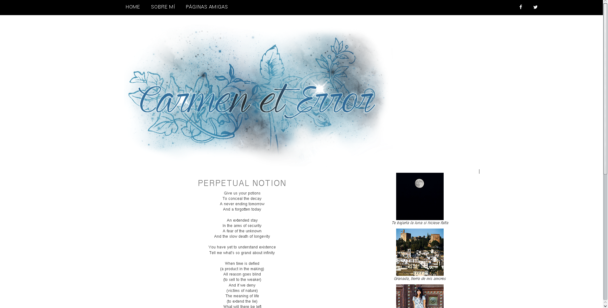
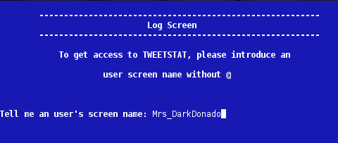
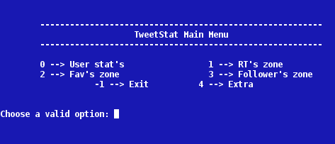
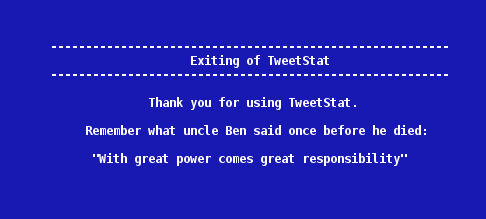
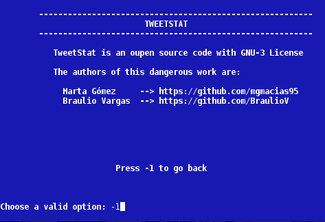

¡Hola!
Sobre mí
¡Hola! Bienvenido/a a mi página web. Me llamo Marta y tengo 20 años.
Actualmente estudio el tercer curso del Grado en Ingeniería Informática en la ETSIIT.
En mi tiempo libre, a parte de hacer lo "típico", me encanta la fotografía.
Me considero una persona trabajadora, activa, perfeccionista y a la que le encanta aprender cosas nuevas.
Habilidades
Actualmente sé lo básico de muchas cosas, la mayoría de cosas que sé las he aprendido en las prácticas que hacemos en la carrera pero también he explorado algunas otras por mi cuenta.
C & C++ & Java
Python
Ruby
HTML & CSS & JavaScript & JQuery
Photoshop
Diseño Carmen et Error
Este proyecto lo hice para ayudar a una amiga a tener un blog con un look más moderno, también me sirvió para aprender cómo funcionaban los temas de Blogger. Lo más destacable es el uso de Bootstrap y el logo, hecho con Photoshop.
Tweet Stat
   Este proyecto lo hice principalmente para aprender a usar Python y también para aprender cómo va la API de Twitter. Lo hicimos entre Braulio Vargas y yo. Este pequeño programa te permite, a partir de un nombre de usuario de Twitter, sacar información sobre sus últimos tweets o sobre sus seguidores.